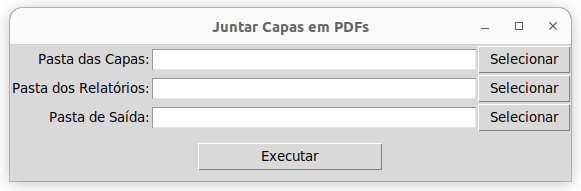
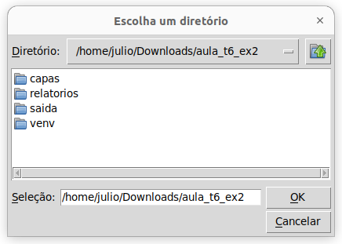
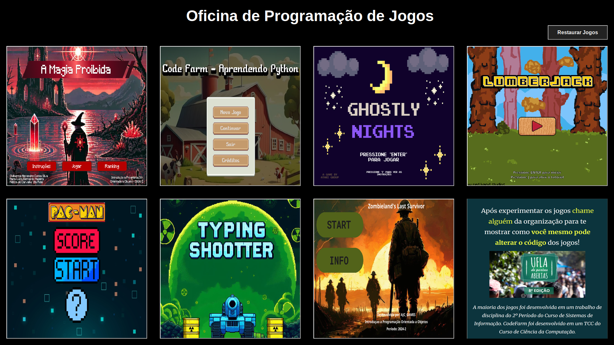

Automatizando Tarefas Tediosas
PASIA - Aula T.6
DAC - ICET - Universidade Federal de Lavras
13/09/2025
O conteúdo dessa aula é baseado no capítulo 9 do livro abaixo.

Introdução
Suponha que você seja responsável por criar 100 relatórios, cada um para uma pessoa diferente.
- Poderia ser um professor que precisa enviar correções para seus estudantes.
- Ou alguém em um departamento de RH que precisa enviar a avaliação anual para cada funcionário.
Suponha que você tenha decidido preparar os relatórios em arquivos PDF.
- E que você precisa de uma capa para os arquivos que é customizada para cada pessoa.
- Seu colega, designer gráfico, preparou essas capas para você.
Você e seu colega trabalharam de forma independente e agora cada um terminou sua tarefa.
- Quer dizer, quase, pois agora é necessário juntar as capas com os relatórios.
Alguém que não é programador estaria agora “rangendo os dentes”
- com o trabalho manual de juntar cada capa com cada relatório.
- Isso poderia levar horas!
Mas nós somos programadores!
- E programadores nunca fariam um trabalho desse manualmente!
- Ou pelo menos não deveriam.
Dica
Muitas vezes seguimos o ditado: Casa de ferreiro, espeto de pau.
E perdemos tempo com tarefas que poderiam ser otimizadas.
Nessa aula vamos ver como escrever programas que automatizam tarefas tediosas.
- Uma das tarefas será essa dos PDFs.
- Mas também veremos outras tipos de tarefas manuais com as quais podemos ganhar tempo automatizando-as.
Por que programadores criam ferramentas?
Muitas vezes os programadores se definem como preguiçosos.
- Não no sentido de que não queremos fazer nosso trabalho.
- Mas sim, que não queremos fazer tarefas que são repetitivas, chatas, tediosas 😒.
- Tipos de tarefas que os computadores são muito melhores que nós.
Bons programadores costumam ter um 🕷️ “sentido aranha” 🕸️ para identificar tarefas penosas.
Suponha, por exemplo, que tenhamos centenas de fotos que juntamos de uma viagem. 🖼️
- E queremos remover as fotos duplicadas.
- E, claro, não queremos ter o trabalho de verificar uma por uma, pois isso levaria muito tempo.
Ou suponha que um professor tenha que enviar um e-mail com notas para cada um de seus estudantes.
- Se forem poucos alunos ele pode escrever um e-mail para cada um.
- Mas se forem muitos, nenhum professor vair querer fazer isso manualmente.
Sempre que um bom programador se depara com uma tarefa com passos repetitivos
- ele pensa em como construir uma ferramenta para automatizá-la.
O termo ferramenta está sendo usado aqui no sentido de programas que fazem algo que nos poupe tempo.
- Muitas vezes a ferramenta em si não é o objetivo final.
- E criar a ferramenta pode também ser meio entendiante.
- Mas uma vez que ela está pronta, ela pode nos poupar muito tempo.
Às vezes criamos uma ferramenta para usar uma única vez.
- Mas, na maioria das vezes, essas ferramentas acabam se tornando úteis novamente no futuro.
- Seja do jeito que ela foi construída inicialmente,
- ou com algumas melhorias.
Eu, Julio, por exemplo, envio um e-mail com feedback individual para os alunos após as correções das provas das disciplinas que leciono.
- Seria inviável fazer isso manualmente.
Eu faço a correção da prova em uma panilha do Google.
- E escrevi um script (Apps Script) que lê a planilha e envia o e-mail para cada aluno.
- Deu um trabalho inicialmente, e de vez em quando preciso fazer ajustes.
- Mas no final das contas, o tempo que economizo é enorme.
E agora que temos Assistentes de IA, como o Copilot,
- ficou ainda mais fácil criarmos ferramentas para tarefas repetitivas.
Não faz sentido um programador não usar essas ferramentas para se ajudar.
- nem no sentido pessoal (podemos usar o tempo que economizamos para coisas mais prazerosas).
- nem no sentido profissional (podemos aumentar nossa produtividade).
Como usar o Copilot para criar ferramentas
Muitas vezes precisamos usar módulos (bibliotecas) do Python para realizar alguma tarefa que precisamos.
- Pode ser que seja uma biblioteca incluída (built-in) do Python.
- Ex.:
csv,json,zipfile, etc.
- Ex.:
- Ou uma biblioteca que precisamos instalar antes de usar.
Quando estamos criando ferramentas, é muito comum que:
- precisemos lidar com arquivos de diferentes formato
- (como arquivos zip, pdf, planilhas de excel ou imagens).
- e que precisemos fazer alguma tarefa específica
- (como enviar e-mails, intergair com um site, mover arquivos, etc).
Para muitas dessas coisas precisaremos usar algum módulo.
- Mas qual módulo?
- E ele é built-in ou preciso instalar?
Assistentes de IA, como o Copilot, podem nos ajudar a começar.
- A ideia é conversarmos com o assistente de IA para descobrir qual módulo precisamos usar.
- E só depois disso entramos na etapa de criar a ferramenta propriamente dita.
Na criação da ferramenta, podemos seguir os passos que vimos anteriormente.
- Definir uma função, e sua docstring, e depois pedir para o Copilot gerar o código dela.
Ao fazer isso, devemos seguir o processo que já vimos antes:
- verificar a corretude do código (testes),
- corrigir os bugs,
- e talvez decompor o problema.
Mas aqui na aula vamos nos concentrar na interação com o Copilot para automizarmos a tarefa que precisamos.
- Para manter o foco no conteúdo que estamos trabalhando neste capítulo.
Nós poderíamos pedir ao Copilot ou ao ChatGPT para fazer a ferramenta completa.
- Mas vamos manter a ideia de criar funções.
Acreditamos que vale a pena trabalharmos com funções, documentadas.
- De forma que seja mais fácil, no futuro, fazer alguma melhoria ou evolução necessária na ferramenta.
Exemplo 1: Lista de compras
Suponha que você precise enviar uma lista de compras para alguém por WhatsApp ou e-mail.
- E que essa lista precise ser numerada, com um item por linha, e em ordem alfabética.
Mas você recebeu a lista de compras de alguém (talvez seu chefe)
- que simplesmente digitou os itens separados por espaço, e em uma ordem qualquer.
Vamos usar o Copilot para automatizar essa tarefa.
Como você recebeu os itens por e-mail ou WhatsApp,
- a ferramenta será mais útil se pudermos copiar (Ctrl+c) os itens da mensagem.
- e colar (Ctrl+v) na nossa ferramenta para ela gerar a lista numerada.
- Caso contrário, teríamos que redigitar a lista
- e aí não estaríamos economizando tempo.
Para isso, precisaremos usar a Área de Transferência (Clipboard) do Sistema Operacional.
Essa Área de Transferência é onde ficam os últimos dados que copiamos com o Ctrl+c.
Podemos então criar uma ferramenta que obtenha as palavras da Área de Transferência;
- gere a lista numerada;
- e copie a lista numerada de volta para a Área de Transferência.
Assim, depois de rodar a ferramenta, podemos simplesmente colar (Ctrl+v) a lista numerada onde quisermos.
Basicamente o que precisamos fazer em um programa em Python é:
- Ler o conteúdo da Área de Transferência e guardar em uma string.
- Gerar a lista numerada e ordenada a partir dessa string.
- Guardar a lista em uma nova string.
- Colocar a nova string na Área de Transferência.
Mas como podemos usar a Área de Transferência em um programa Python?
Vamos descobrir isso usando a janela de chat do Copilot.
- Mas vamos fazer uma exploração mais ampla antes de implementar uma solução.
Vamos abrir uma pasta vazia no VS Code e usar o modo Ask do chat do Copilot.
Prompt
Eu gostaria de escrever um programa em Python que acessa a área de transferência e que permita copiar e colar usando a área de transferência. Como posso fazer isso?
GitHub Copilot
Você pode usar o módulo pyperclip para acessar a área de transferência no Python.
Ele permite copiar e colar texto facilmente. Veja como fazer:
- Instale o pacote:
- Exemplo de código para copiar e colar:
import pyperclip
# Copiar texto para a área de transferência
pyperclip.copy("Olá, área de transferência!")
# Colar (obter) texto da área de transferência
texto = pyperclip.paste()
print("Texto copiado:", texto)Esse código copia um texto para a área de transferência e depois lê o que está lá.
Funciona em Linux, Windows e macOS.
A resposta do Copilot nos ensina que podemos usar o módulo pyperclip para interagir com a Área de Transferência em um programa em Python.
- E nos dá um exemplo de como usar o módulo.
- Ele também nos diz como instalar o módulo.
- O que mostra que ele é não é built-in.
Mas será que não daria para fazer nossa ferramenta sem instalar um módulo?
- Vamos perguntar ao Copilot.
Prompt
Existe alguma forma de fazer isso sem precisar instalar um módulo Python?
GitHub Copilot
Sim, é possível acessar a área de transferência sem instalar módulos externos, mas depende do sistema operacional. No Linux, você pode usar comandos do sistema como xclip ou xsel via subprocess. Veja um exemplo usando xclip:
import subprocess
# Copiar texto para a área de transferência
texto = "Olá, área de transferência!"
process = subprocess.Popen(['xclip', '-selection', 'clipboard'], stdin=subprocess.PIPE)
process.communicate(input=texto.encode())
# Colar (obter) texto da área de transferência
process = subprocess.Popen(['xclip', '-selection', 'clipboard', '-o'], stdout=subprocess.PIPE)
saida, _ = process.communicate()
print("Texto copiado:", saida.decode())Observações:
- Você precisa ter o
xclipinstalado (sudo apt install xclip). - Para Windows, pode-se usar
clipepowershellvia subprocess. - Para macOS, use
pbcopyepbpaste.
Se precisar de exemplos para outros sistemas, é só pedir!
Bom essa solução tem uma desvantagem: depende de um programa externo e do sistema operacional.
- Se formos tratar a tarefa apenas uma única vez poderia nos atender.
- Mas pensando em usos futuros, não é a melhor solução.
Vamos explorar mais soluções.
Prompt
Existe algum outro jeito de fazer isso sem precisar instalar um módulo Python?
GitHub Copilot
Sim, mas você ainda vai precisar de algum utilitário externo já instalado no sistema, como xclip ou xsel no Linux, pbcopy/pbpaste no macOS, ou clip no Windows.
O Python puro não oferece acesso direto à área de transferência na biblioteca padrão.
No Linux, por exemplo, se o xclip já estiver instalado, você pode usar o seguinte código:
import subprocess
# Copiar texto para a área de transferência
subprocess.run("echo 'Texto para copiar' | xclip -selection clipboard", shell=True)
# Colar texto da área de transferência
resultado = subprocess.run("xclip -selection clipboard -o", shell=True, capture_output=True, text=True)
print("Texto colado:", resultado.stdout)Resumo:
Sem instalar módulos Python, você pode usar comandos do sistema operacional via subprocess, desde que o utilitário de área de transferência já esteja disponível no seu sistema.
Bom, essa resposta não ajudou muito, afinal continua basicamente fazendo a mesma coisa da resposta anterior
No livro, a primeira solução dada pelo Copilot usava o módulo tkinter.
- Que tem a limitação de só funcionar em ambientes gráficos (não funciona em servidores Linux, por exemplo).
Ao pedir outra opção, o Copilot sugeriu um código específico para Windows usando win32clipboard.
- Porque os autores estavam em ambiente Windows.
- Mas tem o mesmo tipo de limitação da nossa solução com
xclip.
Avaliando então as opções que temos, a melhor é usar o módulo pyperclip.
- Afinal instalar um módulo não é algo tão complicado.
- E o
pyperclipfunciona em Linux, Windows e macOS,- sem depender de programas externos.
Mas por que devemos explorar e entender várias opções?
Há vários motivos porque não deveríamos simplesmente usar a primeira opção do Copilot:
- Pode não funcionar em todos os sistemas operacionais.
- O que limita os potenciais usuários da ferramenta.
- Pode não funcionar para a tarefa que precisamos, ou pode ser que cheguemos em um ponto que ficamos travados em como resolver um problema.
- E aí sabermos que temos outras opções pode nos ajudar a sair do impasse.
- Módulos são atualizados com frequência.
- E funções que existiam, podem não existir nas versões mais atuais.
- Ou sua forma de uso pode ter sido alterada.
- E, assim, uma sugestão do Copilot pode não funcionar mais.
Agora que sabemos como acessar a Área de Transferência, podemos criar nossa ferramenta.
- como vamos precisar instalar um módulo, vamos aproveitar para aprender como fazer isso do jeito mais correto.
- Claro, com a ajuda do Copilot.
Prompt
Vou seguir com a sugestão que usa pyperclip. Mas, antes disso, me explique a melhor forma de instalar um módulo Python para um projeto?
GitHub Copilot
A melhor forma de instalar um módulo Python para um projeto é usar um ambiente virtual. Assim, as dependências ficam isoladas e não afetam outros projetos ou o sistema.
Passos recomendados:
- Crie um ambiente virtual na pasta do projeto:
- Ative o ambiente virtual:
- Instale o módulo desejado (exemplo: pyperclip):
- (Opcional) Gere um arquivo de dependências:
Assim, você mantém seu projeto organizado e fácil de compartilhar ou replicar em outros ambientes.
O Copilot nos ensinou a criar um ambiente virtual.
- De modo que a instalação do módulo
pyperclipfique dentro da pasta do próprio projeto. - Evitando interferências e conflitos de versões com outros projetos.
Também aprendemos a gerar um arquivo requirements.txt
- mas não ficou muito claro para que ele serve, já que foi gerado somente ao final.
Vamos perguntar ao Copilot.
Prompt
Para que serve o arquivo requirements.txt?
GitHub Copilot
O arquivo requirements.txt serve para listar todas as dependências (módulos e suas versões) necessárias para o seu projeto Python. Ele facilita a instalação dessas dependências em outros ambientes ou por outros desenvolvedores, usando o comando:
Assim, todos os pacotes listados no arquivo serão instalados automaticamente, garantindo que o projeto funcione corretamente.
Agora ficou mais claro.
- Quando formos instalar o projeto em outro computador, ou quando alguém for usar o projeto,
- basta criar um ambiente virtual e rodar o comando
pip install -r requirements.txt.
Vamos, enfim, criar nossa ferramenta.
- Para isso, vamos, criar um arquivo Python, importar o módulo
pyperclip - e definir a assinatura e docstring função que gera a lista numerada.
Prompt
import pyperclip
def gerar_lista_numerada():
""""
A área de transferêcia tem linhas de texto contendo
palavras separadas por espaços e/ou vírgulas.
A função extrai as palavras obtidas da área de transferência,
ordena-as em ordem alfabética e cria uma lista numerada com
um item por linha.
O resultado é copiado de volta para a área de transferência.
"""Código gerado pelo Copilot.
def gerar_lista_numerada():
""""
A área de transferêcia tem linhas de texto contendo
palavras separadas por espaços e/ou vírgulas.
A função extrai as palavras obtidas da área de transferência,
ordena-as em ordem alfabética e cria uma lista numerada com
um item por linha.
O resultado é copiado de volta para a área de transferência.
"""
# Obtém o texto da área de transferência
texto = pyperclip.paste()
# Substitui vírgulas por espaços e divide o texto em palavras
palavras = texto.replace(',', ' ').split()
# Remove duplicatas e ordena as palavras em ordem alfabética
palavras_unicas = sorted(set(palavras))
# Cria a lista numerada
lista_numerada = [f"{i + 1}. {palavra}" for i, palavra in enumerate(palavras_unicas)]
# Junta a lista em uma única string com quebras de linha
resultado = '\n'.join(lista_numerada)
# Copia o resultado de volta para a área de transferência
pyperclip.copy(resultado)
if __name__ == "__main__":
gerar_lista_numerada()Dica
Como nós criamos o ambiente virtual pelo terminal do VS Code, precisamos conferir se o VS Code identificou automaticamente o ambiente virtual, caso contrário, se tentarmos usar a opção Run, o programa não vai funcionar (pois não conseguirá importar o módulo pyperclip).
Precisamos escolher a versão do Python que está dentro do ambiente virtual. Basta clicar no canto inferior direito do VS Code e escolher o Python correto.
Obs.: se criarmos o ambiente virtual pelo VS Code (Ctrl+Shift+P e escolhendo Python: Create Environment), o VS Code já escolhe o Python correto.
Vamos então testar o nosso programa.
Suponha que tenhamos recebido a seguinte lista de compras:
- feijão, arroz, sorvete, café, batata, óleo, cebola
Copie a lista acima (Ctrl+c) e rode o programa.
- Em seguida cole (Ctrl+v) a lista numerada em algum editor de texto.
Veja que deu quase tudo certo.
- Exceto que a palavra
óleoapareceu fora da ordem alfabética.
1. arroz
2. batata
3. café
4. cebola
5. feijão
6. sorvete
7. óleoProvavelmente o erro aconteceu porque a palavra tem acento.
- Vamos pedir ao Copilot para corrigir isso.
Prompt
A ordenação está errada, pois a palavra “óleo” deveria aparecer antes de “sorvete”. Pode corrigir isso?
GitHub Copilot (início)
Claro! O problema ocorre porque a ordenação padrão do Python (sorted) não considera corretamente os acentos para a ordem alfabética em português. Para corrigir, você pode usar o módulo locale e configurar para 'pt_BR.UTF-8'. Veja como ajustar:
import pyperclip
import locale
def gerar_lista_numerada():
"""
A área de transferêcia tem linhas de texto contendo
palavras separadas por espaços e/ou vírgulas.
A função extrai as palavras obtidas da área de transferência,
ordena-as em ordem alfabética e cria uma lista numerada com
um item por linha.
O resultado é copiado de volta para a área de transferência.
"""
# Configura a ordenação para o padrão do português do Brasil
locale.setlocale(locale.LC_COLLATE, 'pt_BR.UTF-8')
# Obtém o texto da área de transferência
texto = pyperclip.paste()
# Substitui vírgulas por espaços e divide o texto em palavras
palavras = texto.replace(',', ' ').split()
# Remove duplicatas e ordena as palavras em ordem alfabética considerando acentos
palavras_unicas = sorted(set(palavras), key=locale.strxfrm)
# Cria a lista numerada
lista_numerada = [f"{i + 1}. {palavra}" for i, palavra in enumerate(palavras_unicas)]
# Junta a lista em uma única string com quebras de linha
resultado = '\n'.join(lista_numerada)
# Copia o resultado de volta para a área de transferência
pyperclip.copy(resultado)
if __name__ == "__main__":
gerar_lista_numerada()Agora sim!
- Temos uma ferramenta que nos economiza tempo pegar gerar a lista no formato correto.
- Claro que esse é um exemplo simples e didático.
- Seguindo a mesma ideia você pode criar ferramentas para tarefas mais complexas.
Mas tem algo que ainda é complicado em nossa ferramenta.
- Precisamos usar o VS Code para rodar o programa.
- Ou então abrir o terminal, navegar até a pasta do projeto, ativar o ambiente virtual e rodar o programa.
- Isso não é muito prático.
Seria melhor se pudéssemos simplesmente clicar duas vezes em um ícone na área de trabalho.
- E aí a ferramenta rodaria sem precisar abrir o VS Code ou o terminal.
Vamos conversar com o Copilot para descobrir como fazer isso.
Prompt
Eu gostaria que esse programa estivesse disponível para o usuário como um comando de terminal. Sem precisar entrar na pasta do projeto, ativer o ambiente virtual e rodar o programa manualmente. Como posso fazer isso?
GitHub Copilot (início)
Para tornar seu programa disponível como um comando de terminal, você pode empacotá-lo como um script executável e instalá-lo no sistema.
O jeito mais comum em projetos Python é criar um entry point usando o setuptools. Veja como fazer:
1. Crie um arquivo setup.py na raiz do projeto:
GitHub Copilot (continuação)
2. Instale o pacote no modo editável (para desenvolvimento):
No terminal, dentro da pasta do projeto:
3. Use o comando no terminal
Agora, você pode rodar o comando de qualquer lugar:
Dicas:
- O comando será instalado em
~/.local/bin(Linux). Certifique-se de que esse diretório está no seu$PATH. - Para outros usuários do sistema, use
sudo pip install .(não recomendado para ambientes compartilhados). - Se quiser distribuir, pode empacotar e publicar no PyPI.
Se quiser um nome de comando diferente, basta alterar em console_scripts.
Legal! Agora podemos abrir um terminal, rodar o comando gerador-lista-numerada e pronto!
- Teremos nossa lista de compras numerada na Área de Transferência.
No entanto…
Bom, sistemas em produção são sempre mais complicados.
- O código que apresentei até aqui funcionou no meu computador.
- Mas ao testar no notebook para preparar a aula, tive que fazer alguns ajustes.
- Porque nele, a versão do Ubuntu e do Python são mais recentes.
- E, claro, o Copilot me ajudou a fazer as alterações necessárias.
O problema é que nas versões mais recentes do Python, o comando abaixo não é permitido:
Isso para proteger a integridade do sistema, evitando instalação de pacotes sem usar um ambiente virtual.
- Mas, para o nosso caso, queremos mesmo instalar o pacote para o usuário.
- E, assim, termos o comando disponível globalmente.
Perguntando então ao Copilot, precisei instalar com o comando abaixo:
Mas será que não podemos fazer algo ainda mais prático?
- Para um usuário leigo, é ruim ter que abrir um terminal e saber o nome do comando.
Bora, conversar com o Copilot novamente.
Prompt
E como faço para ter um ícone na área de trabalho para executar o programa?
GitHub Copilot (início)
Para criar um atalho com ícone na área de trabalho (no Linux), siga estes passos:
1. Crie um arquivo .desktop
Crie um arquivo chamado, por exemplo, GeradorListaNumerada.desktop na sua área de trabalho (~/Área de Trabalho ou ~/Desktop):
[Desktop Entry]
Version=1.0
Type=Application
Name=Gerador Lista Numerada
Comment=Gera uma lista numerada a partir da área de transferência
Exec=gerador-lista-numerada
Icon=/caminho/para/um/icone.png
Terminal=false
Categories=Utility;- Exec: o comando instalado pelo seu script (
gerador-lista-numerada). - Icon: caminho para um arquivo de ícone (PNG, SVG, etc). Você pode usar um ícone próprio ou algum do sistema.
- Terminal: coloque
truese quiser que abra um terminal, oufalsepara rodar em segundo plano.
GitHub Copilot (continuação)
2. Torne o atalho executável
No terminal, rode:
3. (Opcional) Escolha um ícone
Se não tiver um ícone, pode baixar um PNG ou usar algum já presente no sistema, como /usr/share/icons/hicolor/48x48/apps/accessories-text-editor.png.
Agora, basta clicar duas vezes no ícone para executar o programa!
Se aparecer um aviso de segurança, clique em “Confiar” ou “Permitir execução”.
Aqui tive que fazer outra adaptação para rodar no notebook.
- Referente ao caminho do executável que precisa ser completo no Ubuntu mais recente.
No final das contas utilizei esse arquivo GeradorListaNumerada.desktop:
Bacana! Temos agora um programa disponível na área de trabalho.
- Ficou muito mais rápido gerar a lista numerada.
Poderíamos melhorar nosso programa dando algum retorno de que ele foi executado com sucesso.
- E, claro, para criar o atalho na Área de Trabalho do Windows o processo seria diferente.
Poderíamos também pensar em outros exemplos de programas com abordagem parecida:
- Copiar duas colunas de uma planilha contendo e-mail e nota dos alunos e gerar texto para um e-mail para a secretaria informando o número de aprovados e reprovados.
- Copiar trechos do arquivo PDF da Resolução CEPE 473 e acertar as quebras de linha.
Mas vamos tratar outra demanda tediosa agora.
Exemplo 2: Adicionando capas a arquivos PDF
Vamos voltar ao cenário comentado no início da aula.
- Suponha que temos 100 arquivos PDF, cada um com um relatório diferente.
- E que precisamos adicionar uma capa personalizada a cada um desses arquivos.
Primeiramente, vale ressaltar que não é possível ler arquivos PDF da mesma forma que lemos arquivos texto e CSV.
- Arquivos PDF, do Word, Excel, etc., possuem uma estrutura interna diferente.
O arquivo AulaT6-ex2.zip contém duas pastas:
capas: com as 100 capas individuais em PDF.relatorios: com os 100 relatórios individuais também em PDF.
Poderíamos usar algum software, como o Adobe Acrobat, para fazer isso manualmente.
- Mas imagina a trabalheira que daria.
- Em vez disso, vamos pedir ao Copilot para criar uma ferramenta que faça isso para nós.
Antes de pedirmos o Copilot para criar a ferramenta completa,
- vamos explorar como podemos lidar com a junção (merge) de arquivos PDF em Python.
Prompt
Eu gostaria de escrever um programa em Python que junte dois arquivos PDF em um só. Como posso fazer isso?
GitHub Copilot
Você pode usar a biblioteca PyPDF2 para juntar dois arquivos PDF em Python. Veja um exemplo simples:
- Instale a biblioteca (caso ainda não tenha):
- Código para juntar dois PDFs:
from PyPDF2 import PdfMerger
# Lista dos arquivos PDF a serem unidos
arquivos = ['arquivo1.pdf', 'arquivo2.pdf']
merger = PdfMerger()
for pdf in arquivos:
merger.append(pdf)
merger.write('pdf_unido.pdf')
merger.close()Basta substituir 'arquivo1.pdf' e 'arquivo2.pdf' pelos nomes dos seus arquivos. O resultado será salvo como pdf_unido.pdf.
Já temos então uma opção que parece atender o que precisamos.
- Mas vamos explorar se existe alguma opção com módulo built-in.
Prompt
Existe alguma forma de fazer isso sem precisar instalar um módulo Python?
GitHub Copilot
Não existe uma forma nativa em Python puro para manipular ou juntar arquivos PDF, pois o formato PDF é complexo e não é suportado pela biblioteca padrão do Python.
Se você não quiser instalar módulos Python, pode usar ferramentas externas já instaladas no Linux, como o pdftk ou o qpdf. Por exemplo, usando o terminal:
Com pdftk:
Com qpdf:
Essas ferramentas precisam estar instaladas no seu sistema, mas não exigem instalar módulos Python. Se preferir uma solução 100% Python, será necessário instalar um módulo como o PyPDF2.
Bom, a solução apresentada depende da instalação de programas externos, o que parece mais complicado do que instalar um módulo Python.
- Obs.: no livro, o Copilot sugeriu criar um script Python que no final das contas usava esses programas.
A primeira opção parece boa, mas vamos explorar se existem alternativas.
Prompt
Existem outros módulos Python que eu deveria considerar para tratar essa tarefa?
GitHub Copilot
Sim! Além do PyPDF2, você pode considerar outros módulos Python para manipulação de PDFs:
- pypdf: É uma continuação moderna do PyPDF2, com mais recursos e manutenção ativa.
- PyMuPDF (fitz): Muito rápido e poderoso, permite manipular, mesclar, dividir e até extrair texto e imagens de PDFs.
- pdfminer.six: Focado em extração de texto, mas também pode manipular PDFs em alguns casos.
- pdfrw: Permite ler e escrever PDFs, além de mesclar e dividir arquivos.
Para tarefas simples de juntar PDFs, pypdf e PyMuPDF são ótimas opções. Exemplo com pypdf:
from pypdf import PdfMerger
merger = PdfMerger()
merger.append("arquivo1.pdf")
merger.append("arquivo2.pdf")
merger.write("pdf_unido.pdf")
merger.close()Escolha o módulo conforme suas necessidades e preferências!
A resposta do Copilot nos mostrou que existe um módulo mais moderno que o PyPDF2, o pypdf.
- E cujo exemplo de código parece bem simples.
Mas antes de seguirmos com o pypdf, vamos entender melhor os prós e contras de cada módulo sugerido.
Prompt
Quais são os prós e contras de cada um desses módulos?
GitHub Copilot (início)
Aqui está um resumo dos prós e contras dos principais módulos Python para manipulação de PDFs:
1. PyPDF2
Prós:
- Fácil de usar para tarefas básicas (juntar, dividir, rotacionar).
- Bastante documentado e com muitos exemplos.
- Não depende de bibliotecas externas.
Contras:
- Desenvolvimento desacelerado (pode estar desatualizado).
- Suporte limitado para PDFs complexos ou protegidos.
- Algumas funções avançadas podem não funcionar corretamente.
GitHub Copilot (continuação)
2. pypdf
Prós:
- Continuação moderna do PyPDF2, com manutenção ativa.
- Interface semelhante ao PyPDF2, facilitando a migração.
- Corrige bugs e adiciona novos recursos.
- Boa documentação.
Contras:
- Ainda pode ter limitações com PDFs muito complexos.
- Algumas funções avançadas podem não estar presentes.
GitHub Copilot (continuação)
3. PyMuPDF (fitz)
Prós:
- Muito rápido e eficiente.
- Suporte avançado para manipulação de páginas, extração de texto, imagens e metadados.
- Suporta PDFs complexos e outros formatos (XPS, EPUB).
- Documentação detalhada.
Contras:
- API um pouco mais complexa para tarefas simples.
- Pode ser mais pesado para instalar (depende de bibliotecas C).
GitHub Copilot (continuação)
4. pdfrw
Prós:
- Leve e puro Python.
- Permite mesclar, dividir e modificar PDFs.
- Útil para manipulação de formulários PDF.
Contras:
- Menos mantido e atualizado.
- Suporte limitado para PDFs complexos.
- Documentação menos detalhada.
GitHub Copilot (continuação)
5. pdfminer.six
Prós:
- Excelente para extração de texto detalhada.
- Suporta PDFs complexos e multilíngues.
Contras:
- Não é focado em manipulação (juntar/dividir) de PDFs.
- API mais complexa para tarefas simples de manipulação.
Resumo:
- Para juntar/dividir PDFs: pypdf ou PyMuPDF são as melhores opções.
- Para extração de texto: pdfminer.six ou PyMuPDF.
- Para manipulação leve e sem dependências: pdfrw.
Escolha conforme sua necessidade!
A resposta do Copilot nos ajudou a entender melhor as opções.
- O
pypdfparece ser uma boa escolha, pois é uma versão mais moderna doPyPDF2. - E o exemplo de código que ele nos deu é bem simples.
Vamos partir para a criação da ferramenta.
- Vamos definir a assinatura da função e a docstring com o que queremos.
Dica
Antes de continuarmos, vale a pena chamar a atenção para cuidados que devemos tomar ao fazer automatizações que lidam com arquivos.
Se a ferramenta que criarmos estiver incorreta, podemos perder arquivos em nosso computador. Algumas dicas são:
- Sempre trabalhar com cópias dos arquivos, nunca com os originais.
- Verifique se os arquivos que a ferramenta vai processar estão corretos.
- Ex.: podemos comentar as linhas que manipulam os arquivos e imprimir os nomes dos arquivos que seriam processados.
- Assim conseguimos conferir se são realmente os arquivos que pretendemos usar.
- Sempre fazer testes com poucos arquivos, antes de rodar a ferramenta com todos os arquivos.
Para definirmos a assinatura da função, veja que precisaremos de três parâmetros:
- as pastas das capas, dos relatórios e de onde queremos colocar os arquivos gerados.
Também precisaremos explicar o padrão de nomes dos arquivos.
- Para que o Copilot gera um código que junte a capa correta com o relatório correto.
E podemos importar a bibliteca pypdf que já sabemos que vamos usar.
Lembre-se também que precisamos seguir o mesmo procedimento do exemplo anterior para criar o ambiente virtual e instalar o módulo pypdf.
Lembre-se também de configurar o VS Code para usar o Python do ambiente virtual.
Vamos então criar um arquivo Python e definir a assinatura da função e a docstring.
import pypdf
def adicionar_capas_a_pdfs(pasta_capas, pasta_relatorios, pasta_saida):
"""
Adiciona capas personalizadas a arquivos PDF de relatórios.
Parâmetros:
- pasta_capas: Caminho da pasta contendo os arquivos PDF das capas.
Os arquivos têm nome cover1.pdf, cover2.pdf, etc.
- pasta_relatorios: Caminho da pasta contendo os arquivos PDF dos relatórios.
Os arquivos têm nome 1.pdf, 2.pdf, etc.
- pasta_saida: Caminho da pasta onde os arquivos PDF resultantes serão salvos.
A função lê cada arquivo de capa e o respectivo relatório,
junta os dois em um único arquivo PDF e salva na pasta de saída.
"""Esse foi o código gerado pelo Copilot no meu caso.
import pypdf
def adicionar_capas_a_pdfs(pasta_capas, pasta_relatorios, pasta_saida):
"""
Adiciona capas personalizadas a arquivos PDF de relatórios.
Parâmetros:
- pasta_capas: Caminho da pasta contendo os arquivos PDF das capas.
Os arquivos têm nome cover1.pdf, cover2.pdf, etc.
- pasta_relatorios: Caminho da pasta contendo os arquivos PDF dos relatórios.
Os arquivos têm nome 1.pdf, 2.pdf, etc.
- pasta_saida: Caminho da pasta onde os arquivos PDF resultantes serão salvos.
A função lê cada arquivo de capa e o respectivo relatório,
junta os dois em um único arquivo PDF e salva na pasta de saída.
"""
import os
# Lista os arquivos de capa e relatório
capas = sorted([f for f in os.listdir(pasta_capas) if f.startswith('cover') and f.endswith('.pdf')])
relatorios = sorted([f for f in os.listdir(pasta_relatorios) if f.endswith('.pdf')])
# Verifica se o número de capas e relatórios é o mesmo
if len(capas) != len(relatorios):
raise ValueError("O número de capas e relatórios deve ser o mesmo.")
for capa, relatorio in zip(capas, relatorios):
caminho_capa = os.path.join(pasta_capas, capa)
caminho_relatorio = os.path.join(pasta_relatorios, relatorio)
caminho_saida = os.path.join(pasta_saida, relatorio)
# Lê os arquivos PDF
leitor_capa = pypdf.PdfReader(caminho_capa)
leitor_relatorio = pypdf.PdfReader(caminho_relatorio)
escritor_pdf = pypdf.PdfWriter()
# Adiciona a capa
for pagina in leitor_capa.pages:
escritor_pdf.add_page(pagina)
# Adiciona o relatório
for pagina in leitor_relatorio.pages:
escritor_pdf.add_page(pagina)
# Salva o novo arquivo PDF com a capa adicionada
with open(caminho_saida, 'wb') as arquivo_saida:
escritor_pdf.write(arquivo_saida)
# Exemplo de uso:
# adicionar_capas_a_pdfs('pasta_capas', 'pasta_relatorios',
# 'pasta_saida')
if __name__ == "__main__":
# Exemplo de uso
adicionar_capas_a_pdfs('pasta_capas', 'pasta_relatorios', 'pasta_saida')Vamos agora copiar as pastas de capas e relatórios para dentro do nosso projeto.
- E criar uma pasta
saidavazia para onde os arquivos gerados serão salvos. - Precisamos acertar os nomes das pastas no script.
Hora de testar o programa!
- Confira, por amostragem, pelo menos 3 arquivos gerados para conferir se deu certo.
Reutilizando a ferramenta
Vamos supor que essa operação fosse necessária mais vezes.
- E que precisasse ser feita por alguém que não é programador.
- Que tal pedirmos o Copilot para gerar uma interface gráfica simples para a ferramenta?
Prompt
Eu gostaria de criar uma interface gráfica simples para essa ferramenta. Pode me ajudar?
GitHub Copilot (início)
Claro! Você pode criar uma interface gráfica simples usando o Tkinter, que já vem com o Python. Vou sugerir um exemplo básico onde o usuário pode selecionar as três pastas (capas, relatórios e saída) e clicar em um botão para executar a função.
Adicione o seguinte código ao final do seu arquivo junta_capas.py:
# ...existing code...
import tkinter as tk
from tkinter import filedialog, messagebox
def selecionar_pasta(entry_widget):
pasta = filedialog.askdirectory()
if pasta:
entry_widget.delete(0, tk.END)
entry_widget.insert(0, pasta)
def executar():
pasta_capas = entry_capas.get()
pasta_relatorios = entry_relatorios.get()
pasta_saida = entry_saida.get()
try:
adicionar_capas_a_pdfs(pasta_capas, pasta_relatorios, pasta_saida)
messagebox.showinfo("Sucesso", "Arquivos gerados com sucesso!")
except Exception as e:
messagebox.showerror("Erro", str(e))GitHub Copilot (continuação)
if __name__ == "__main__":
root = tk.Tk()
root.title("Juntar Capas em PDFs")
tk.Label(root, text="Pasta das Capas:").grid(row=0, column=0, sticky="e")
entry_capas = tk.Entry(root, width=40)
entry_capas.grid(row=0, column=1)
tk.Button(root, text="Selecionar", command=lambda: selecionar_pasta(entry_capas)).grid(row=0, column=2)
tk.Label(root, text="Pasta dos Relatórios:").grid(row=1, column=0, sticky="e")
entry_relatorios = tk.Entry(root, width=40)
entry_relatorios.grid(row=1, column=1)
tk.Button(root, text="Selecionar", command=lambda: selecionar_pasta(entry_relatorios)).grid(row=1, column=2)
tk.Label(root, text="Pasta de Saída:").grid(row=2, column=0, sticky="e")
entry_saida = tk.Entry(root, width=40)
entry_saida.grid(row=2, column=1)
tk.Button(root, text="Selecionar", command=lambda: selecionar_pasta(entry_saida)).grid(row=2, column=2)
tk.Button(root, text="Executar", command=executar, width=20).grid(row=3, column=0, columnspan=3, pady=10)
root.mainloop()
# ...existing code...GitHub Copilot (continuação)
Como funciona:
- O usuário seleciona as três pastas usando os botões “Selecionar”.
- Ao clicar em “Executar”, a função é chamada e mostra uma mensagem de sucesso ou erro.
Se quiser, pode separar a interface em outro arquivo, mas assim fica tudo em um só. Se precisar de melhorias, é só pedir!
Com esse código, temos uma interface gráfica simples, mas bem prática:


Se quiséssemos poderíamos novamente criar um atalho na área de trabalho para abrir essa interface gráfica.
Fluxo de trabalho para usar módulos do Python com o Copilot
Após termos feito esses dois exemplos, podemos pensar em um fluxo de trabalho para usar o Copilot na criação de ferramentas que usem módulos do Python.
- Pedir ao Copilot (ou ChatGPT) para listar módulos do Python que podem ser usados para a tarefa de interesse.
- Perguntar ao Copilot sobre os prós e contras de cada módulo.
- Escolher o módulo que parece mais adequado.
- Se necessário, criar um ambiente virtual e instalar o módulo.
- Seguir o Ciclo de Projeto de Funções que vimos anteriormente, incluindo o módulo escolhido.
- Se ficarmos travados, tentamos um módulo diferente.
Exemplo 3: Interface para Oficina de Programação de Jogos
Nós acabamos de ter o 8º UFLA de Portas Abertas.
- E, dentro do evento, tivemos a Oficina de Programação de Jogos.
Nessa oficina, os participantes do evento experimentam, e modificam, jogos implementados como trabalho da disciplina IPOO de Sistemas de Informação.
- E um jogo para ensino de Python, desenvolvido como TCC de Ciência da Computação.
No evento do ano anterior tínhamos duas dificuldades:
- Deixávamos todos os jogos em todas as máquinas, mas abríamos um jogo em cada máquina alternadamente.
- A ideia era que os participantes percebessem que havia vários jogos.
- Depois que os participantes alteravam o código de um jogo, precisávamos restaurar o código original para a próxima turma.
- Dava uma trabalheira fazer isso na mão.
Usei então o ChatGPT e Copilot para criar uma interface gráfica simples
- que funcionasse como uma tela inicial (launcher) que mostrasse os jogos disponíveis.
- Que permitisse iniciar os jogos ao clicar neles.
- E que também tivesse um botão para restaurar o código original do jogo.
- Para isso, usei um repositório git local para cada jogo.
- Restaurar o jogo era simplesmente rodar o comando
git restore .na pasta do jogo.
Esse foi meu primeiro prompt para o ChatGPT:
Prompt
Tenho alguns jogos desenvolvidos em Java usando a IDE Greenfoot que gostaria de utilizar em uma demonstração. A ideia é que a pessoa chegue e jogue os 7 jogos disponíveis no computador. Para jogar cada jogo é necessário abrir o projeto no Greenfoot e executar. Para facilitar esse processo, gostaria de ter uma espécie de “landing page” que mostrasse uma imagem de cada jogo e que, quando o usuário clicasse na imagem, o Greenfoot fosse aberto com o projeto do jogo em questão. Estou usando Linux Ubuntu e creio que para abrir o Greenfoot bastaria executar uma linha de comando passando o caminho do projeto como parâmetro. Essa “landing page” pode ser com qualquer tipo de tecnologia que seja fácil de fazer (pode ser web rodando local, ou uma aplicação Python, enfim, qualquer coisa). Procuro algo simples e rápido de fazer ou alterar.
O ChatGPT sugeriu três opções, já com exemplos de código
- Uma página HTML que precisaria ser aberta com Electron ou com um servidor Python para conseguir executar scripts locais.
- Uma aplicação Python com interface gráfica usando
Tkinter. - Um menu no terminal para a escolha do jogo.
Não entendi porque ele sugeriu a opção 3 🤔
- Mas, enfim, escolhi a opção 2, que me pareceu mais prática.
Usei o prompt:
Prompt
Gostei da opção 2. Mas gostaria que a aplicação fosse aberta maximizada e que as imagens dos jogos ficasse todas do mesmo tamanho em um grid com 2 linhas e 4 colunas
Não vou colocar todos os prompts aqui, não fiz de forma muito estruturada.
- De um certo ponto em diante passei para o Copilot.
Mas alguns dos passos foram:
- Foram geradas algumas versões de código que geravam erro (eu colava o erro no ChatGPT).
- Durante o processo, às vezes aparecia só o primeiro jogo, outra hora o primeiro e o quinto.
- Quando apareceram todos os jogos, a janela deixou de ficar maximizada.
- Depois, pedi para substituir um dos espaços de jogo por uma imagem.
- Pedi que, ao abrir um jogo, a IDE fosse fechada antes (para não deixar várias instâncias em execução).
Mas alguns dos passos foram:
- Acrescentei um dos jogos que era via Godot Engine e não via Greenfoot.
- Acrescentei o botão para restaurar o código original dos jogos.
E esse foi o resultado final…

No dia do evento, ainda tivemos uma surpresa.
- Eu tinha testado o programa em uma máquina do laboratório.
- E como, em tese, todas as máquinas têm a mesma imagem, tudo funcionaria.
- Mas ao fazer a instalação pela manhã, vimos que o programa não funcionava em algumas máquinas.
- Por que o módulo
tkinterdepende de instalação no sistema operacional.
- Por que o módulo
- Consegui apoio para fazer a instalação (dependia de senha de administrador).
Mas enquanto estava tentando isso, usei o ChatGPT e ele informou que uma alternativa seria usar o pygame.
- Pois é um módulo Python que não depende de instalação no sistema operacional.
Pretendo fazer isso no próximo ano 😉
Exemplo 4: Juntando fotos de vários celulares
Imagine que queremos juntar fotos dos nossos celulares e de nossos familiares.
- A ideia é ter tudo acessível em um único lugar.
- Para que todos possam ter acesso a todas as fotos.
- Mas, provavelmente, existem fotos repetidas, que uma pessoa mandou para outra.
- e não queremos ter fotos repetidas no nosso acervo.
Vamos então criar uma ferramenta que faça isso para nós.
Para testar, vamos usar o arquivo AulaT6-ex4.zip que contém várias figuras em PNG.
- Existem duas subpastas,
figuras1efiguras2, cada uma com várias figuras. - Não são fotos reais, mas servem para testar a ferramenta.
A pasta figuras1 tem 98 figuras e a pasta figuras2 tem 112.
- No total são então 210 figuras, mas 10 são repetidas.
- Por ex.: a figura 1566.png da pasta
figuras1é idêntica à figura 2471.png da pastafiguras2.
- Por ex.: a figura 1566.png da pasta
- Portanto, se nossa ferramenta funcionar corretamente, no final teremos 200 figuras.
- Além disso, devemos tomar cuidado pois podem existir fotos diferentes nas duas pastas mas com o mesmo nome.
- Por ex.: a figura 9595.png da pasta
figuras1é diferente da figura 9595.png da pastafiguras2. - Nesse caso nós não queremos perder nenhuma das duas, e precisaremos renomear uma delas.
- Por ex.: a figura 9595.png da pasta
Para esse exemplo, não vou colocar aqui nos slides o passo a passo completo.
- Vou colocar os prompts usados no livro, mas sem apresentar os resutados do Copilot.
- Repita os passos no seu computador e teste com o arquivo mencionado.
Prompt
Eu preciso escrever um programa em Python que copia arquivos. Como posso fazer isso?
- A ideia de copiar arquivos em vez de movê-los é para evitar perda de dados.
Prompt
O módulo shutil precisa ser instalado?
Prompt
Como eu posso descobrir se dois arquivos PNG são idênticos usando Python?
Prompt
E se eu tiver centenas de arquivos PNG e quiser encontrar arquivos duplicados? Essa abordagem ainda funciona?
Prompt
Como eu posso descobrir se dois arquivos PNG são idênticos usando Python?
A partir daí os autores livro usam decomposição de problemas para criar a ferramenta.
- A ideia é criar uma ferramenta mais genérica de forma que possa ser usada em mais situações.
- Por exemplo, ela poderia receber várias pastas de figuras e não apenas duas.
- E poderia copiar as fotos para uma pasta de destino,
- sempre verificando se a foto já existe lá (para evitar duplicatas).
Os autores, usando design top-down, definem então as funções abaixo.
- Fazer cópias de vários arquivos em uma pasta de destino, apenas se ele não for duplicado.
- Fazer cópia de um arquivo em uma pasta de destino, apenas se ele não for duplicado.
- Obter um bom nome para o arquivo copiado (para evitar perda de dados com conflito de nomes).
Essas são as assinaturas e docstrings das funções usadas no livro.
- Como já vimos antes, na hora de implementar seguimos o caminho bottom-up.
- Portanto, será apresentada primeira a 3ª função, depois a 2ª e por fim a 1ª.